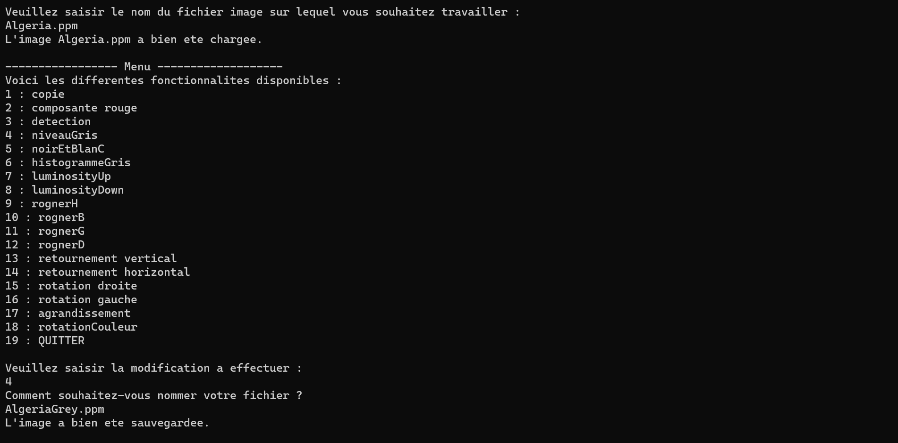
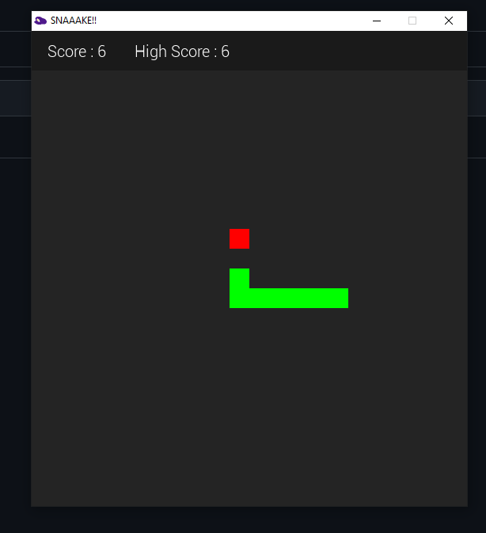
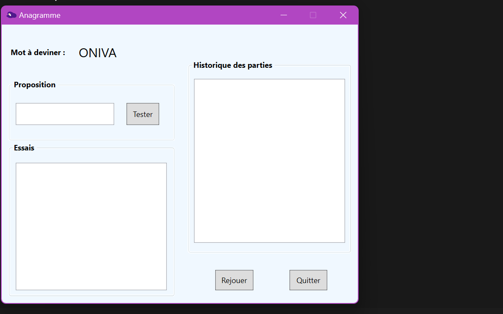
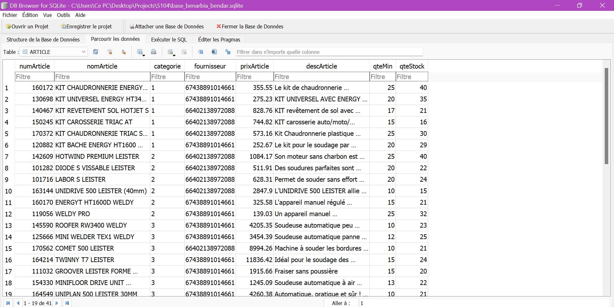
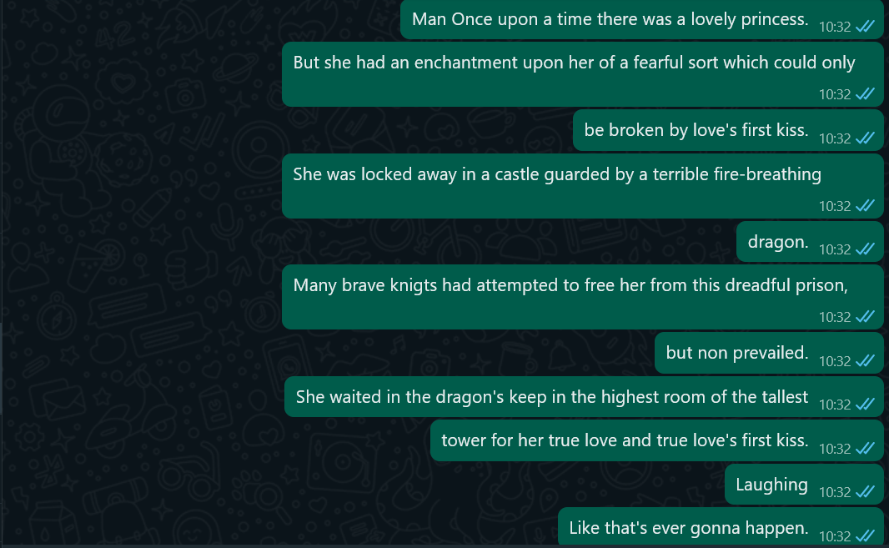

À propos de moi
Passionnée d'informatique depuis le collège, j'ai approfondi mes connaissances dès le lycée grâce à la spécialité Numérique et Sciences Informatiques (NSI). C'est là que j'ai découvert la programmation, à travers la réalisation de divers projets en cours, une expérience qui m'a particulièrement enthousiasmée et qui a renforcé mon désir de poursuivre des études supérieures dans ce domaine.
J'ai alors choisi de m'orienter vers un BUT Informatique. Cette formation m'a semblé être le choix le plus judicieux pour consolider mes compétences et acquérir une expérience pratique plus approfondie.
Actuellement en première année de BUT Informatique, je recherche un contrat en alternance pour la rentrée 2024, d’une durée de 2 ans et au rythme de 2 jours en entreprise et 3 jours en IUT.
Formation
IUT d'Orsay (Université Paris Saclay) - en cours
Baccalauréat Général - 2023
Première année de BUT Informatique à l'IUT d'Orsay
Choix du parcours A : Réalisation d'applications à partir de la deuxième année
Choix des spécialités Numérique et Sciences Informatiques (NSI) et Mathématiques
Obtenu mention très bien
Mes compétences
Langages

Outils

Systèmes d'exploitation
Mes projets
Site Portfolio
Le site sur lequel vous naviguez actuellement. Réalisation d’un site web portfolio afin de mettre en pratique les différentes compétences en HTML et en CSS acquises en cours. Tous mes projets y sont présentés plus en détail.
Minijeux
Premier projet informatique scolaire, réalisé au lycée en tant que devoir pour la spécialité NSI. Programmation en Python de trois minijeux : jeu du pendu, mastermind et morpion.
- Pendu : Séléction aléatoire d'un mot parmi une liste répertoriée dans un fichier texte, le joueur dispose de plusieurs tentatives pour le deviner.
- Mastermind : Génération d'une combinaison aléatoire de chiffres selon le niveau sélectionné par le joueur, qu'il doit également deviner.
- Morpion : Le joueur joue contre l'ordinateur au jeu du morpion.
Le projet est consultable ici : https://github.com/bndrbzznysf/projets/tree/main/Minigames
Logiciel d'édition d'images
Programme permettant d’éditer et d’enregistrer des images au format ppm (ascii). Utilisation de classes pour stocker les valeurs de Rouge, Vert et Bleu de l’image dans des vecteurs et y effectuer des modifications. Après la saisie du nom de l’image à modifier et enregistrer par l’utilisateur, plusieurs fonctionnalités sont disponibles, comme par exemple augmenter/diminuer la luminosité de l’image, rognage et rotation, retournement horizontal/vertical, noir et blanc...

Le projet est consultable ici : https://github.com/bndrbzznysf/projets/tree/main/editionPhoto
Snake
Programmation du jeu classique Snake en python. Utilisation de la librairie pygame

Le projet est consultable ici : https://github.com/bndrbzznysf/projets/tree/main/Snake
Anagramme
Réalisation d'un jeu où il faut deviner un anagramme affiché à l'écran en C# WPF. L'utilisateur peut jouer une partie d'Anagramme, où il faut retrouver le mot qui se cache derrière le mot mélangé. Il peut faire des propositions de réponses, consulter/visualiser les propositions précédentes, et il a un nombre limité de tentatives pour une partie. Si le mot est trouvé, la partie est gagnée, si le mot n'est pas trouvé à l'issu des tentatives, la partie est perdue, cela est affiché par une boîte de dialogue. L'utilisateur peut relancer une nouvelle partie à tout moment, la partie en cours est considérée perdue. A la fin d'une partie Gagnée ou Perdue, on demande à l'utilisateur s'il souhaite refaire une partie, l'historique des parties est conservé.

Le projet est consultable ici : https://github.com/bndrbzznysf/projets/tree/main/Anagramme
Base de données
Conception et implémentation d'une base de données pour une entreprise spécialisée dans l'importation de matériel industriel,
réalisée sur SQLite. Ce projet comprend le recueil d'informations nécessaires à la modélisation de la base, la création du Modèle Conceptuel de Données,
du Schéma Relationnel, du dictionnaire de données, ainsi que l'élaboration de requêtes SQL telles que la création de la base, l'insertion de données
et l'interrogation de la base de données.

Le projet est consultable ici : https://github.com/bndrbzznysf/projets/tree/main/base_donnees
SpamBot
Programme envoyant ligne par ligne un texte stocké dans un fichier à un destinataire sur Whatsapp. Écrit en Python. Utilisation du module pyautogui

Le projet est consultable ici : https://github.com/bndrbzznysf/projets/tree/main/SpamBot